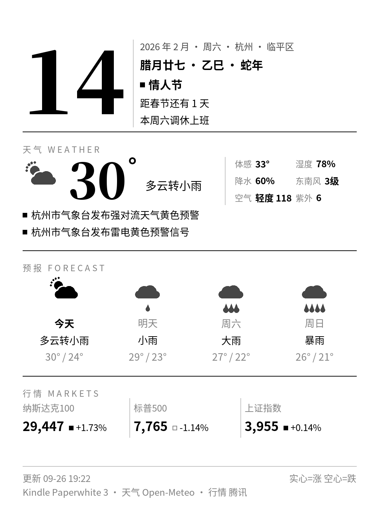
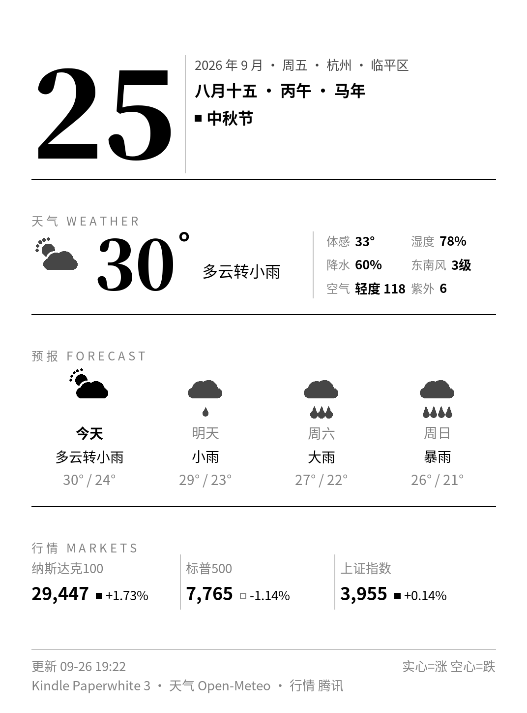
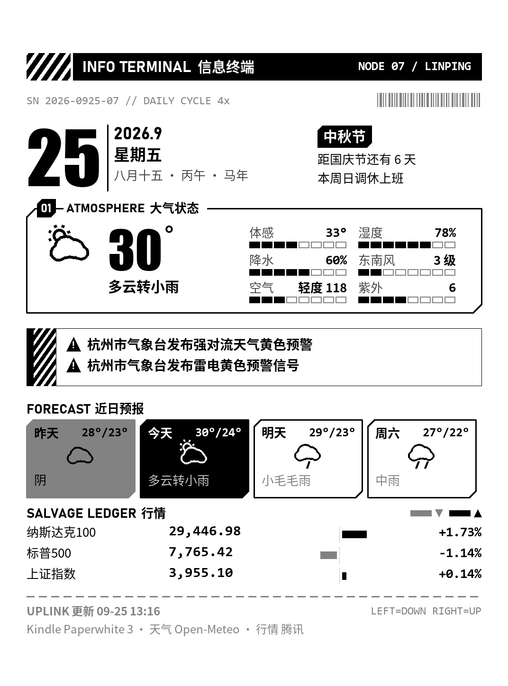
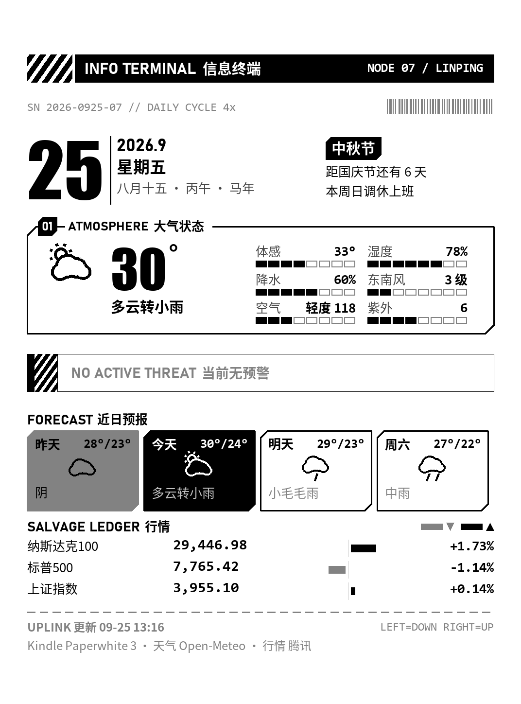
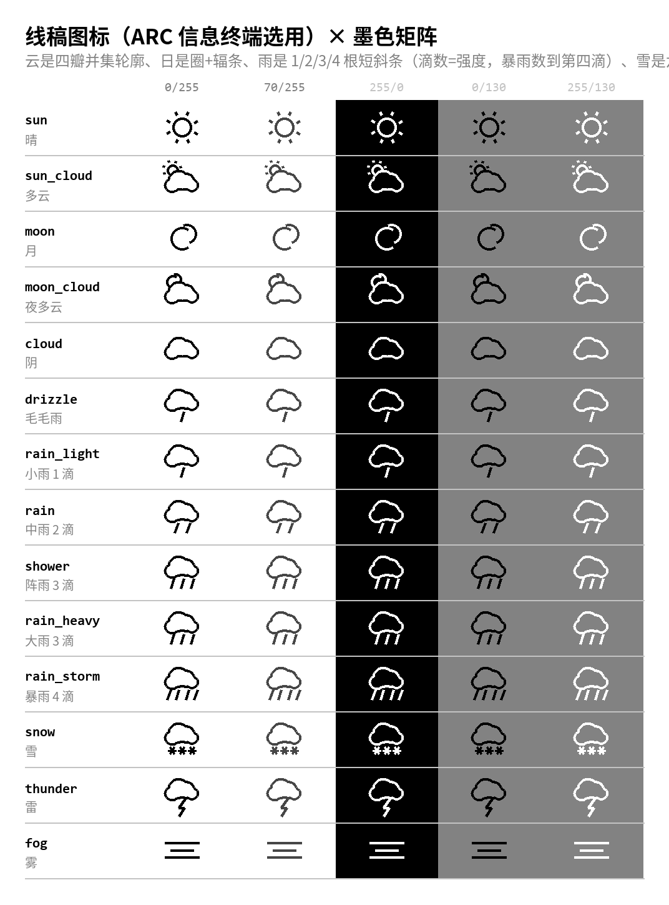
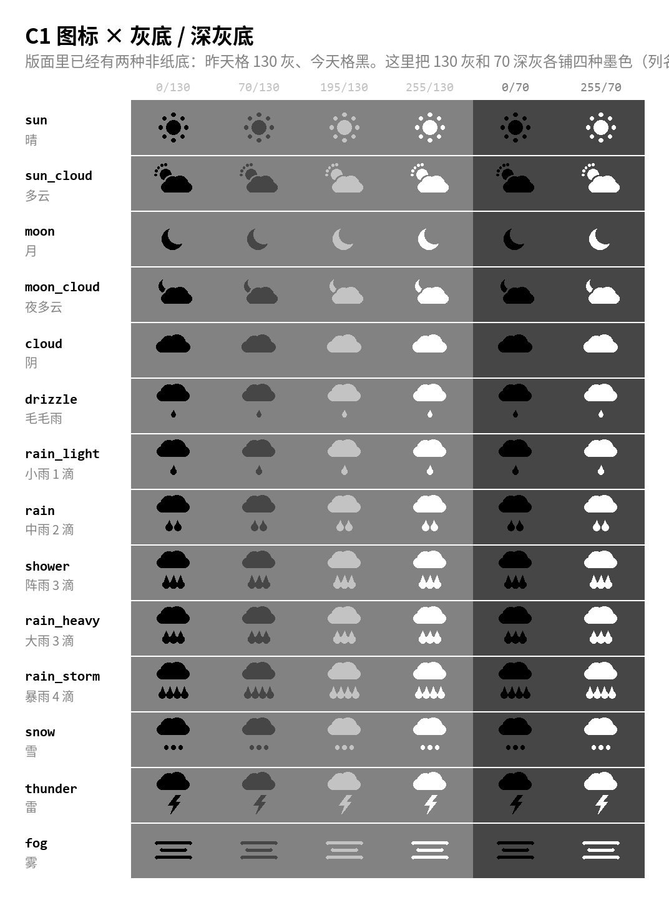

1 · C1「带」
已上生产 · style.layout=c1四条横带：日期带 / 大气带 / 预报带 / 数据带。图标是「柔雾 · 灰实心」那套， 现在雨系按强度数滴数：毛毛雨与小雨 1 滴、中雨 2 滴、大雨与阵雨 3 滴、暴雨 4 滴（不靠把滴画大）。 内容挤的时候走截断梯队（调休 → 倒计时 → 第二条预警 → 数据格 → 预报天气词 → 第三个指数）， 砍了什么写在页脚。


2 · 信息终端（ARC Raiders 译法）
本轮定稿 · 待移植成 style.layout危险斜纹 + 切角面板 + DIN/Impact 工业字 + 分段仪表 + 涨跌条； 图标用线稿轮廓那一套（云是四瓣并集轮廓、日是圈+辐条、雨是 1/2/3/4 根短斜条）。 预报叫「近日预报」：昨天灰底、今天反相、明/后天白底，大后天不要了。 涨跌不写字例：灰条+▼=跌、黑条+▲=涨，条长=幅度（满长 ≈ 3%）。


3 · 天气图标（决定记录）
C1 用柔雾实心 · 信息终端用线稿两套各留各的语言，但守同两条规矩：滴数=强度；云体中心对所有天气固定， 一排画出来天然齐平。非纸底只能用纯黑或纯白 —— 130 灰底上 70 和 195 会几乎消失， 所以昨天格用黑、今天格用白。审查页：图标.html （灰阶 / 尺寸 / 云体对齐 / 灰底 / 线稿五张）。


4 · 还没办的
- 云端重发布：C1 的改动（图标滴数、反相底色修正）要生效得由你在 WorkBuddy 桌面端点一次发布 —— 我这边碰不到。
- 信息终端要不要移植：现在只活在
dashboard/tools/design_arc.py里，生产render.py没这个 layout。你说要我再动。 - 未提交：本轮改过的
render.py、sources.py、lunar.py、config.yaml和几个设计工具都还没进 git。 - 被否掉的已经归档：大日期杂志封面款、赛博朋克一轮、复古报纸一轮、ARC 的落选图标（冲压实心 / 点阵）、
以及一次性出稿脚本，全部移到
.workbuddy/_archive/2026-09-26/（没删，要捞随时能捞）。_directions/现在只剩这页用到的 11 个文件。